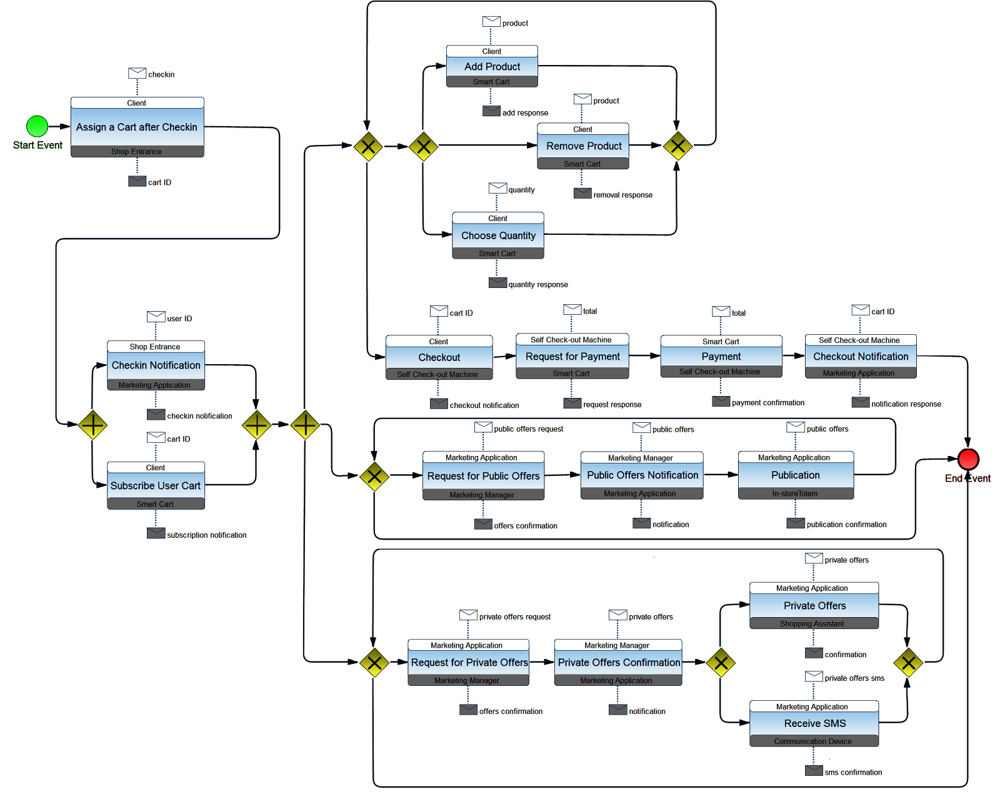

Get Started
Learn how to use the replication package.
Installation
Clone the replication package from Github and build everything.
git clone https://github.com/sesygroup/choreography-synthesis-enactment.git choreography-synthesis-enactment
cd choreography-synthesis-enactment
mvn clean install
Design and Synthesis
The folder design-synthesis contains the artefacts of the development activities covering the choreography design and the code synthesis.
| Folder | Description |
|---|---|
| choreography | Contains the BPMN2 choreography diagram of the In-store Marketing and Sale use case. |
| choreography-architecture | Contains the graphical representation of Choreography Architecture Description model. |
| choreography-deployment | Contains the Choreography Deployment Description model. |
| coordination-delegates | Contains the set of Coordination Delegates. Before building them, fix the pom file with the URL and the port of syncope (monitor). Execute mvn clean verify to apply the modifications, a war folder containing the compiled CDs is created. |
| existing-services | Contains the set of business services. Before building them, fix the pom file with the number of running. Execute mvn clean verify to apply the modifications, a war folder containing the compiled services is created. Deploy these services where you want. |
In-store Marketing and Sale BPMN2 choreography diagram

Deployment and Enactment
The folder deployment-enactment contains the artifacts necessary for deploying the synthesized coordination delegates and enacting the choreography.
We will provide here the basic instructions for choreography enactment, but more detailed instructions can be found at the Enactment Engine User Guide.
Setup your target node
Run 5 virtual machines (VMs) on your localhost. The coordination delegates will be deployed on these VMs. Be sure each VM:
- Uses Ubuntu 12.04.
- Is accessible through SSH using a key requiring no password.
- Allows sudo without typing a password: type sudo visudo and add the line [user] ALL = NOPASSWD: ALL at the end (change [user] by the actual user).
- Has an adjusted clock: #ntpdate ccsl.ime.usp.br.
- It's bootstrapped (i.e. has Chef installed) by running the org.ow2.choreos.deployment.nodes.cm.BootstrapFixedMachines class.
Setup the Enactment Engine
Requirements for your localhost: Java 6 or later, Maven 3.
Download and extract the EE binary from here.
Move the files on the deployment-enactment/ee-conf folder of this repo to the conf folder of EE.
Edit the file conf/clouds.properties according to your VM properties. You can consider as example the clouds.properties.experiment file that was used on our experiments.
Launch the EE: mvn exec:java.
Host CD packages
The WAR files of the generated coordination delegates must be accessible through some URL. For achieve this, you can, for example, host them on Dropbox.
Fix the choreography specification
Edit the file design-synthesis/choreography-deployment/in-store-marketing-and-sale-chor-spec.xml on the repo and replace properly the content of packageUri and nativeURIs properties.
Invoke the Enactment Engine to enact the choreography
Finally, in the same folder where is the in-store-marketing-and-sale-chor-spec.xml file, trigger the following commands:
- curl -X POST -d @in-store-marketing-and-sale-chor-spec.xml http://0.0.0.0:9100/enactmentengine/chors --header "Content-Type:application/xml"
- curl -X POST http://0.0.0.0:9100/enactmentengine/chors/1/deployment
Execution and Monitoring
The folder execution-monitoring contains the software artefacts required for executing and for monitoring the choreography.
| Folder | Description |
|---|---|
| client-monitor | It is a syncope connetor. Before building it, fix the pom file with the URL and the port of syncope (monitor). This changing requires a rebuilding of the entire repository, so execute mvn clean install in the folder choreography-synthesis-enactment. |
| choreography-instance-execution | Creates new choreography instances. Before creating choreography instances, fix the pom file with the URL and the port of client service, and with the number of instances that you want run. Execute mvn clean verify to apply the modifications and then use mvn exec:java to create choreography instances. |
| retrieve-monitoring-data | Use when all choreography instances end, to send to the monitor all the monitoring data. Before sending monitoring data, make sure that syncope is in running, and fix the pom file with the URL and the port of business services and CDs. Execute mvn clean verify to apply the modifications and then use mvn exec:java to send monitoring data. |
| syncope | It is the monitor. Startup the monitor with mvn -Pembedded in the folder enduser. When the monitor is in execution go to http://localhost:9080/syncope-console to display it, provide the credential to access it username: admin and password: password, and go to Extensions and then Choreographies to show the set of monitored choreographies. When the monitor shutdowns all the monitoring data are erased, so to backup them execute curl -X GET -u admin:password -o MasterContent.xml http://localhost:9080/syncope/rest/configurations/stream. |
| execution-results | Contains all the monitoring data about the 10 runnings of the In-store Marketing and Sale choreography. To show the data make sure that syncope is not in running, and substitute the syncope MasterContent.xml with one of these. To substitute the MasterContent.xml execute cp running-[NUM_RUNNING]/MasterContent.xml ../syncope/core/src/test/resources/domains/. Execute mvn clean install in the root folder of syncope to apply the modifications and then startup the monitor. |